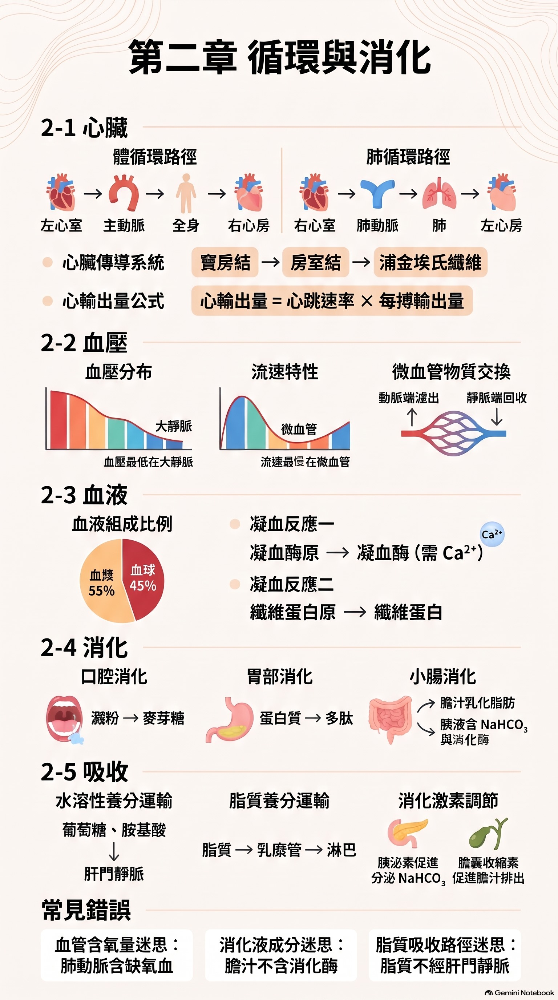

2-1
循環系統的類型與心臟
- 體循環：左心室 → 主動脈 → 全身 → 上下腔靜脈 → 右心房；肺循環：右心室 → 肺動脈 → 肺 → 肺靜脈 → 左心房
- 心動週期 0.8 s（心房收縮 0.1、心室收縮 0.3、全心舒張 0.4）；心輸出量 = 心跳速率 × 每搏輸出量
4資訊圖表重點
點一下放大全圖
2互動視覺化：心動週期與心電圖
示意圖：心臟以「面對病人」的方向繪製，所以右心在畫面左邊。拉高心跳，觀察哪一個時期縮短最多。
1NotebookLM 簡報
3隨堂評量
2-2
血管與血壓
- 血壓沿血流方向下降，小動脈降最多、大靜脈與右心房最低；微血管總截面積最大，所以流速最慢
- 微血管：血壓把液體推出、膠體滲透壓把液體吸回（動脈端 35 − 25 = +10 濾出，靜脈端 15 − 25 = −10 回收）
4資訊圖表重點
點一下放大全圖
2互動視覺化：微血管物質交換與水腫
點一種血管看約略數值（示意，數值為成人安靜時的約略值）。
1NotebookLM 簡報
3隨堂評量
2-3
血液與淋巴系統
- 血漿 55%＋血球 45%；凝血：凝血酶原 →（Ca²⁺）凝血酶，纖維蛋白原 → 纖維蛋白
- ABO 血型看紅血球上的抗原，抗體在血漿；Rh⁻ 接觸 Rh⁺ 後才產生抗體；輸血以同型為原則
4資訊圖表重點
點一下放大全圖
2互動視覺化：血型鑑定與輸血
血型：
Rh：
捐血者：
受血者：
1NotebookLM 簡報
3隨堂評量
2-4
消化系統與消化作用
- 口腔：唾液澱粉酶（澱粉 → 麥芽糖）；胃：鹽酸活化胃蛋白酶（蛋白質 → 多肽）
- 小腸：膽汁乳化脂肪（不含酶）、胰液含 NaHCO₃ 與胰澱粉酶、胰蛋白酶、胰脂肪酶；刷狀緣酶完成最後分解
4資訊圖表重點
點一下放大全圖
2互動視覺化：消化酶實驗室
酶：
1NotebookLM 簡報
3隨堂評量
2-5
養分的吸收與消化的調節
- 單醣、胺基酸 → 絨毛微血管 → 肝門靜脈 → 肝臟；脂肪酸、甘油單酯 → 乳糜微粒 → 乳糜管 → 淋巴 → 胸管 → 鎖骨下靜脈
- 胃泌素促進胃液分泌；胰泌素促進胰臟分泌 NaHCO₃；膽囊收縮素促進膽汁排出與胰臟分泌消化酶
4資訊圖表重點
點一下放大全圖
2互動視覺化：養分去哪裡？激素怎麼調節？
1NotebookLM 簡報
3隨堂評量
🧠
本章心智圖
- NotebookLM 產生的概念架構（中文版）：點小標題可展開或收合
- 上課可先全部收合，請學生猜每個分支下面有什麼，再逐一打開
🃏
學習卡
- 點卡片（或按空白鍵）翻面看答案；← → 切換上一張、下一張
- 標記「我會了／再複習」，可以只練還不熟的卡片；標記只存在這台電腦的瀏覽器
★
總複習
- 本章核心重點、形成性評量 10 題（附答案）、完整資訊圖表與教學影片
1NotebookLM 簡報：核心重點與形成性評量
▶NotebookLM 教學影片
4完整資訊圖表

點一下放大